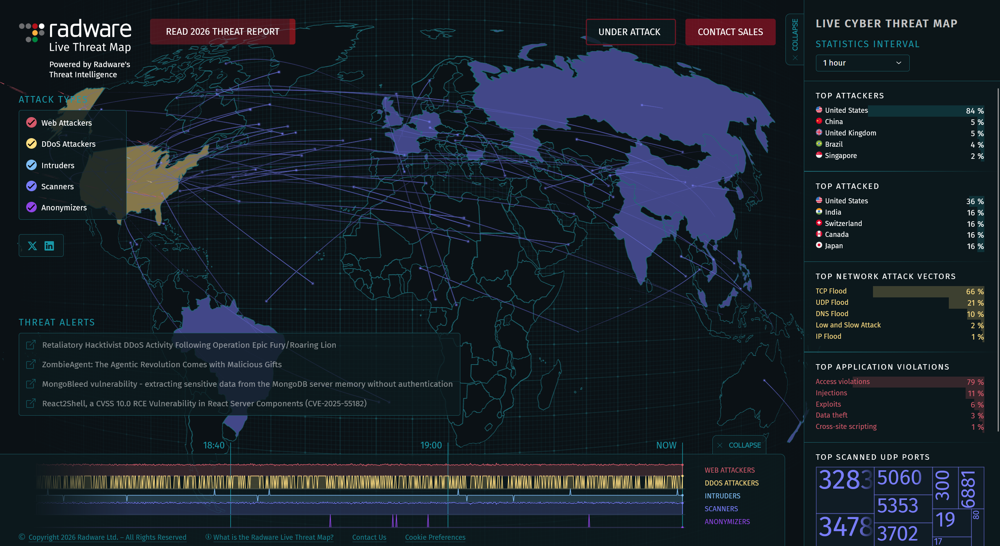

Bức tranh về mối đe dọa mạng hiện nay
Mỗi 39 giây, một cuộc tấn công mạng xảy ra trên thế giới. Năm 2024, thiệt hại toàn cầu từ tội phạm mạng ước tính vượt 9 nghìn tỷ USD — con số lớn hơn GDP của hầu hết các quốc gia. Đây không còn là chủ đề của phim hành động; đây là thực tế số mà mọi N08MiniCloud và tổ chức phải đối mặt.
Từ các doanh nghiệp lớn như Sony, Yahoo đến bệnh viện, trường học, chính phủ — không ai miễn nhiễm. Và đáng lo ngại hơn, các cuộc tấn công ngày càng tinh vi, được tự động hóa bởi chính AI mà chúng ta đang ca ngợi ở bài trước.

Bản đồ các cuộc tấn công mạng theo thời gian thực trên toàn cầu (Nguồn: radware)
Các hình thức tấn công phổ biến nhất
Dưới đây là những mối đe dọa bạn có nhiều khả năng gặp phải nhất:
- Phishing: Email giả mạo ngân hàng, công ty dịch vụ để đánh cắp thông tin đăng nhập. Chiếm 36% tổng số vi phạm dữ liệu.
- Ransomware: Mã độc mã hóa toàn bộ dữ liệu của bạn và đòi tiền chuộc. Trung bình một cuộc tấn công ransomware gây thiệt hại 4.5 triệu USD.
- Social Engineering: Kẻ tấn công giả làm IT support, đồng nghiệp hoặc đối tác để thao túng nạn nhân tiết lộ thông tin.
- Man-in-the-Middle: Tấn công xen giữa kết nối để nghe lén hoặc chỉnh sửa dữ liệu truyền tải — thường xảy ra trên WiFi công cộng.
- Zero-day Exploit: Khai thác lỗ hổng bảo mật chưa được vá, thường do các nhóm hacker quốc gia sử dụng.
🛡 Thực tế đáng sợ: 95% các vụ vi phạm bảo mật xảy ra do lỗi con người — không phải do lỗ hổng kỹ thuật. Kẻ tấn công thường không "hack vào hệ thống" mà "hack vào con người" trước.

Các nguyên tắc tạo mật khẩu mạnh và quản lý tài khoản an toàn
7 nguyên tắc bảo mật cơ bản cho mọi người
Bảo mật không cần phải phức tạp. Chỉ cần thực hành những điều này nhất quán, bạn đã an toàn hơn 90% người dùng thông thường:
- Dùng mật khẩu dài (12+ ký tự), ngẫu nhiên và khác nhau cho mỗi tài khoản. Dùng trình quản lý mật khẩu như Bitwarden hoặc 1Password.
- Bật xác thực hai yếu tố (2FA) cho mọi tài khoản quan trọng — email, ngân hàng, mạng xã hội.
- Cập nhật phần mềm ngay khi có bản vá bảo mật. Hầu hết các cuộc tấn công khai thác lỗ hổng đã có bản vá nhưng chưa được cập nhật.
- Không click vào link trong email hoặc SMS lạ. Luôn truy cập trực tiếp qua trình duyệt.
- Sao lưu dữ liệu định kỳ theo quy tắc 3-2-1: 3 bản sao, 2 loại phương tiện, 1 bản lưu ngoại tuyến.
- Sử dụng VPN tin cậy khi dùng WiFi công cộng tại quán cà phê, sân bay.
- Kiểm tra haveibeenpwned.com để biết email của bạn có bị lộ trong các vụ rò rỉ dữ liệu không.
Kết luận: Bảo mật là thói quen, không phải sản phẩm
Không có phần mềm hay thiết bị nào có thể bảo vệ bạn hoàn toàn nếu bạn không chú ý đến hành vi số của mình. Bảo mật tốt nhất xuất phát từ nhận thức — hiểu kẻ tấn công muốn gì, chúng làm thế nào, và tại sao bạn là mục tiêu.
Trong thế giới mà mọi thứ đều kết nối, bảo vệ dữ liệu N08MiniCloud của bạn cũng chính là bảo vệ danh tính, tài sản và sự riêng tư của bạn trong thế giới thực.